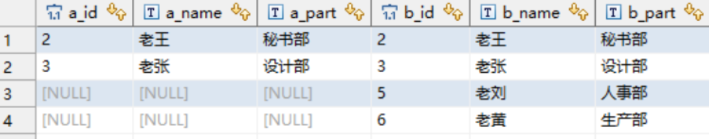

2023-02-20
表内外连接
修改于: 2023-02-20假设有两个表a, b:
CREATE TABLE `a_table` ( `a_id` int(11) DEFAULT NULL, `a_name` varchar(10) DEFAULT NULL, `a_part` varchar(10) DEFAULT NULL ) ENGINE=InnoDB DEFAULT CHARSET=utf8 CREATE TABLE `b_table` ( `b_id` int(11) DEFAULT NULL, `b_name` varchar(10) DEFAULT NULL, `b_part` varchar(10) DEFAULT NULL ) ENGINE=InnoDB DEFAULT CHARSET=utf8
表数据
内连接
内连接, 语法:
inner join on
用例:
select * from a_table a inner join b_table b on a.a_id = b.b_id;
结果
说明: 结果只会包含满足 a.a_id = b.b_id. 相当于两个表的交集.
左连接（左外连接）
语法:
left join on / left outer join on
用例:
select * from a_table a left join b_table b on a.a_id = b.b_id;

结果
- left join 是left outer join的简写，它的全称是左外连接，是外连接中的一种
- 左连接会显示主表（左表）的全部记录，右表只会显示符合连接条件的数据，不符合的为null
右连接（右外连接）
关键字:
right join on / right outer join on
语句:
select * from a_table a right outer join b_table b on a.a_id = b.b_id;

执行结果
- right join是right outer join的简写，它的全称是右外连接，是外连接中的一种。
- 与左(外)连接相反，右(外)连接，显示右表（主表）所有记录，左表只会显示符合连接条件的数据，不符合的为null
全外连接(mysql不支持)
关键字:
full [outer] join
相当于返回两个表的并集, 没有的为空
MySQL暂不支持这种语句，不过可以使用union将两个结果集“堆一起”， 利用左连接，右连接分两次将数据取出，然后用union将数据合并去重。
| 参考:: |
|---|
UNION
这个不属于连接, 不过容易混, 所以放在这
合并多个结果集为一个
MySQL UNION 操作符用于连接两个以上的 SELECT 语句的结果组合到一个结果集合，并去除重复的行。 UNION 操作符必须由两个或多个 SELECT 语句组成，每个 SELECT 语句的列数和对应位置的数据类型必须相同:
SELECT column1, column2, ... FROM table1 WHERE condition1 UNION SELECT column1, column2, ... FROM table2 WHERE condition2 [ORDER BY column1, column2, ...];
参数说明:
- column1, column2, ... 是你要选择的列的名称，如果使用 * 表示选择所有列。
- table1, table2, ... 是你要从中查询数据的表的名称。
- condition1, condition2, ... 是每个 SELECT 语句的过滤条件，是可选的。
- ORDER BY 子句是一个可选的子句，用于指定合并后的结果集的排序顺序。
将选择客户表和供应商表中所有城市的唯一值，并按城市名称升序排序:
SELECT city FROM customers UNION SELECT city FROM suppliers ORDER BY city;
还有个 UNION ALL, 也是合并结果集, 但是不会去重.
- 总结
- UNION 语句：用于将不同表中相同列中查询的数据展示出来；（不包括重复数据）
- UNION ALL 语句：用于将不同表中相同列中查询的数据展示出来；（包括重复数据）
- 使用形式如下::
- SELECT 列名称 FROM 表名称 UNION SELECT 列名称 FROM 表名称 ORDER BY 列名称； SELECT 列名称 FROM 表名称 UNION ALL SELECT 列名称 FROM 表名称 ORDER BY 列名称；